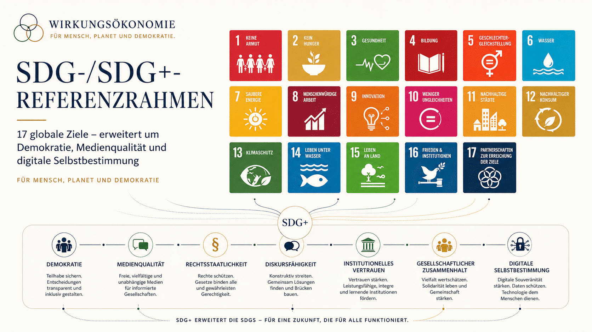

Positionierung
Wirkung statt Kapital
Kapital bleibt Werkzeug. Wirkung auf Mensch, Planet und Demokratie wird der Kompass.
 Wirkungsökonomie
Wirkungsökonomie
Online-Styleguide
Dieser Styleguide ist die verbindliche Grundlage für die Website der Wirkungsökonomie. Er definiert Farben, Typografie, Abstände, Buttons, Content-Blöcke, Tabellen, Bilder und Responsive-Verhalten.

Markenbasis
Die Website soll wie ein neues Ordnungsmodell wirken: institutionell, wissenschaftlich anschlussfähig, europäisch, ruhig und zugänglich.
Positionierung
Kapital bleibt Werkzeug. Wirkung auf Mensch, Planet und Demokratie wird der Kompass.
Tonalität
Starke Thesen sind erlaubt. Alarmismus, NGO-Klischees, KI-Sprache und Managementjargon bleiben draußen.
Layout
Keine verschachtelten Card-Landschaften. Abschnitte führen, Karten vergleichen, Tabellen erklären.
Logo-System
Das Signet verbindet Mensch, Planet und Demokratie in einer ruhigen geometrischen Ordnung. Es funktioniert im Header, als Favicon und als Signatur in Grafiken.
Hauptlogo
Header-Logo
Signet und Favicon
Farben
Navy und Ivory bilden die Grundordnung. Green führt positive Wirkung, Gold markiert Wertigkeit und Prüfung, Coral bleibt Risiko und Spannung.
Typografie und Abstände
Die Hauptüberschriften sind bewusst begrenzt. Keine Seite soll durch zu große H1-Flächen dominieren, wenn sie eigentlich erklären, vergleichen oder führen muss.
--type-heroMaximal 3.55rem auf Desktop, kompakter auf Mobile.--type-h1Für normale Seiten, Glossar und Dokumentdetails.--type-h2Abschnittsführung, nicht als zweiter Hero.--type-h3Ruhige Modultitel, scanbar in Grids.--space-sectionEinheitlicher vertikaler Rhythmus.--card-paddingGleiche Innenabstände für wiederholte Module.Buttons und Links
Visuelle Buttons sind nur für echte Handlungen. Navigation nutzt Links. Zustandswechsel in Tools nutzen echte Buttons. Kleine Textverweise bleiben Textlinks.
Komponenten
Jeder Content-Typ hat eine Rolle. Karten sind für vergleichbare Einheiten da, Zitate für prägnante Gedanken, Tabellen für echte Vergleiche.
Standard Card
Karten haben maximal einen Hauptgedanken, einen ruhigen Titel und eine klare nächste Aktion nur bei Bedarf.
Wenn eine ganze Karte klickbar ist, wird sie als Link gebaut und nicht zusätzlich mit einem Button überladen.
Download Card
Downloadkarten enthalten Titel, Stand, Kurzbeschreibung und genau einen primären Download-CTA.
„Kapital bleibt Werkzeug. Wirkung wird Kompass.“Zitatblock für zentrale Thesen
Tabellen
Tabellen bekommen einen Wrapper, klare Kopfzeilen, horizontales Scrollen auf kleinen Displays und keine überladenen Zelltexte.
| Element | Rolle | Regel |
|---|---|---|
| Card Grid | Vergleichbare Einheiten | Gleiche Innenabstände, gleiche Titelhierarchie, keine verschachtelten Cards. |
| CTA Row | Nächster Schritt | Ein primärer CTA, maximal zwei sekundäre Pfade. |
| Data Table | Strukturierter Vergleich | Nur verwenden, wenn Listen oder Cards die Aussage verschlechtern würden. |
Bildsprache
Verwendet werden Systemgrafiken, Buchlook, ruhige Diagrammflächen und reale Produkt- oder Dokumentbezüge. Keine Stock-Businessbilder, keine Blätter-Klischees, keine generischen Glanzmotive.



Content-Typen
Die Website nutzt unterschiedliche Inhalte, aber dieselbe visuelle Grammatik: Einstieg, Orientierung, Begründung, Vergleich, Handlung.
Responsive-Regeln
Ab 760px werden CTAs gestapelt, Tabellen scrollbar oder als Data Cards dargestellt, große Headline-Sonderfälle fallen auf den kompakten Typografiesatz zurück.
assets/css/style.css statt eigener Abstands- und Schriftgrößen.